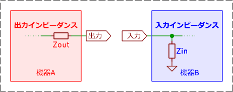
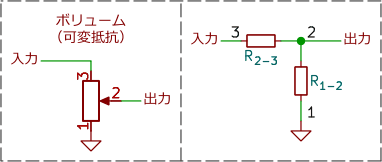
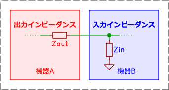
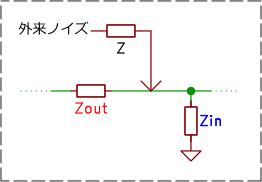
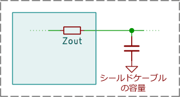
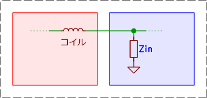

「ボリューム」で考える入出力インピーダンス
2026年04月29日 カテゴリー：メモ・雑記
ギタリスト、ベーシスト、エフェクター設計者向けのインピーダンスに関する知識について、「ボリューム」を使ってできるだけわかりやすく解説します。
■ オームの法則
残念ながらこれを避けては通れません。式の形はいろいろありますが、電流 = 電圧 ÷ 抵抗 という式をイメージしてみます。
電圧は、漢字の通り電気を押し出す圧力のようなものです。そして電流は電気が流れる量です。電気を流そうとしても、普通は何かしらの障害があり流れにくくなります。これが抵抗です。 なので、電圧を抵抗で割ることで電流が表現されます。抵抗が低ければ、電流が多く流れます。水の流れなどで表現されることがありますが、交流信号ではうまく当てはまる例えはなかなかありません。
現代の音響機器では、電流はあまり考慮しない電圧伝送が主流なので、「電圧」に着目します。以下の説明では電圧の大きさがそのまま音量になるものとして説明しています。
※アンプの出力は電流を考慮するため、規定のスピーカーを接続します。
■ インピーダンス
インピーダンスは「交流抵抗」と言われます。 コンデンサやコイルは電流を流しにくくするという抵抗的な性質を持っています。そういった抵抗的な成分を全てひっくるめてインピーダンスと呼びます（impede = 妨げる）。 コンデンサやコイルは周波数によって電流の流しにくさ（抵抗）が変わります。しかしそこまで複雑に考える必要はなく、コンデンサやコイルも単に抵抗的なものと考えればよいです。
※ダイオード、トランジスタ、オペアンプなどの素子でも、電流の通りにくさとしての「インピーダンス」が存在します。
機器の出力と入力には、必ず何らかの抵抗的な成分が含まれています。これが出力インピーダンスと入力インピーダンスです。アルファベットのZで表します。

「ハイインピーダンスな信号」は出力インピーダンスが高い機器から出力された信号という意味合いです。具体的な入出力インピーダンスの値は、機器の説明書に記載されています。
■ ボリューム
ボリュームは抵抗の組み合わせでできており、抵抗により電圧が分割されて出力されます（抵抗分圧）。シャフトを時計回りに回すと、2番端子が3番端子に近づきます。 すなわち、1-2番間の抵抗R1-2が大きくなり、2-3番間の抵抗R2-3が小さくなります。

出力電圧は、入力電圧の R1-2 / ( R2-3 + R1-2 ) 倍です。（例：R2-3 = 200Ω R1-2 = 800Ω だと出力電圧は 0.8倍）
機器同士の出力と入力を接続すると、ボリュームと同様のことが起こります。

もし、出力インピーダンスが高い機器と入力インピーダンスが低い機器を接続すると、ボリュームを絞った状態となり、音量が低下します。 すると後段の機器で必要以上にゲインを上げる必要が出てくるため、SN比の悪化などが懸念されます。よって、低い出力インピーダンス・高い入力インピーダンス、いわゆるロー出し・ハイ受けが原則となるというわけです。
外来ノイズについては、出力インピーダンスが高い信号源と考えることができます。出力インピーダンスや入力インピーダンスが高いと、ノイズが減衰しません。つまりノイズに弱いということになります。

インピーダンス整合（インピーダンスマッチング）
出力インピーダンスと入力インピーダンスを同じにすると、取り出せる電力（電圧×電流）が最大となります。これは電力伝送といい、オーディオ機器以外の分野で用いられている考え方なので、基本的に考慮する必要はありません。
■ コンデンサ
電気を貯めることができる素子で、高い周波数の信号を通しやすいという性質があります。 実際に部品としては存在しなくても、シールドケーブルやスイッチなど、信号経路のいたるところにコンデンサのような成分は潜んでいます（寄生容量・浮遊容量）。
ローパスフィルター
ある機器にシールドケーブルを接続した状態を考えます。コンデンサを抵抗として考えると、これもボリュームと同様の形になります。 高い周波数では抵抗値が低くなるので音量が減り、ハイ落ち状態になります。いわゆるローパスフィルター（ハイカットフィルター）です。出力インピーダンスが低ければ、後段の容量の影響を受けにくくなります。
■ コイル
コンデンサとは逆で、高い周波数の信号を通しにくい性質があります。ギター・ベースのピックアップはコイルであり、出力インピーダンスが高く、周波数によって変化します。
ローパスフィルター
ある機器にコイルを接続した状態を考えます。コイルを抵抗として考えると、これもボリュームと同様の形になります。 高い周波数では抵抗値が高くなるので音量が減り、ハイ落ち状態になります。コンデンサのときと同様、ローパスフィルターです。入力インピーダンスが高ければ、高音域の損失が少なくて済みます。
※Fuzz Faceのように、あえて入力インピーダンスが低い機器に接続する場合もあります。
■ まとめ
- インピーダンスは抵抗的な成分
- 機器同士を接続 → ボリュームを形成
- ロー出し・ハイ受け → 音量低下防止・ノイズ低減・高音域低下防止